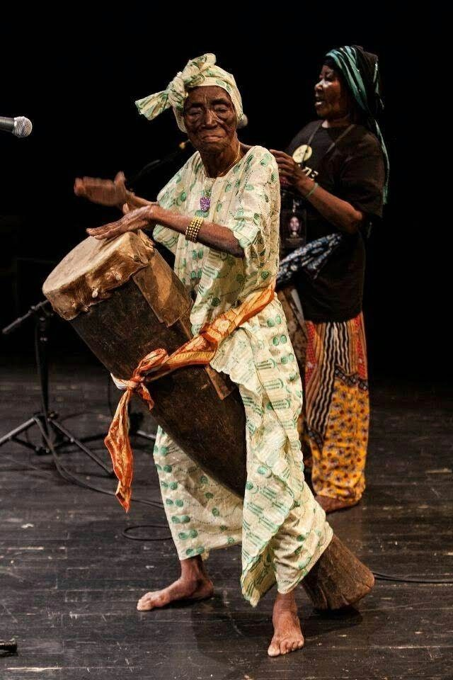
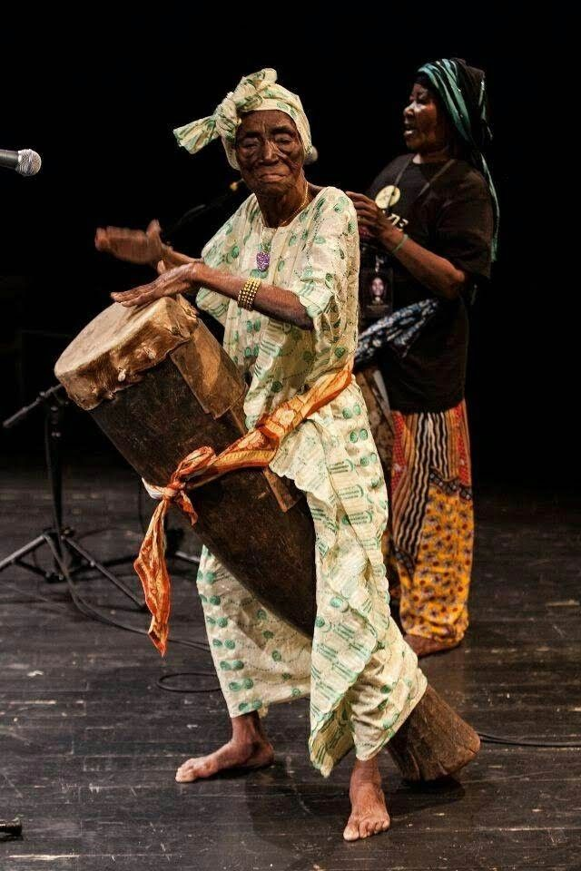

Music
Music is the heartbeat of Africa, a language that speaks across borders, tribes, and time. It lives in the echo of drums, the hum of the kora, the soul of the mbira, and the call of the voice. From ancient chants to modern Afrobeats, music carries our stories, our joys, our struggles, and our dreams. It is movement, memory, and meaning a rhythm passed down through generations, connecting the past to the present, and the people to the land.
 
